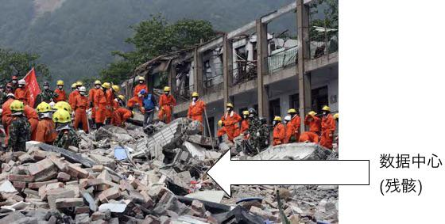
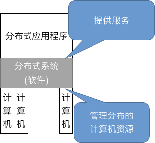
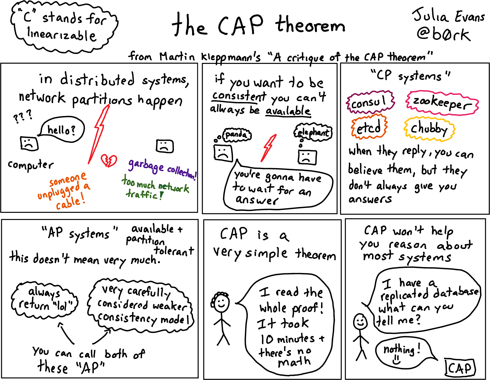
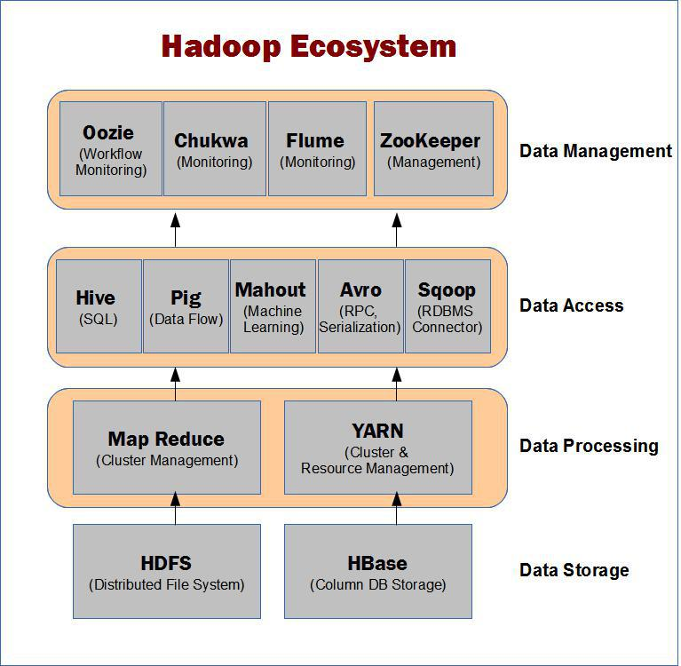
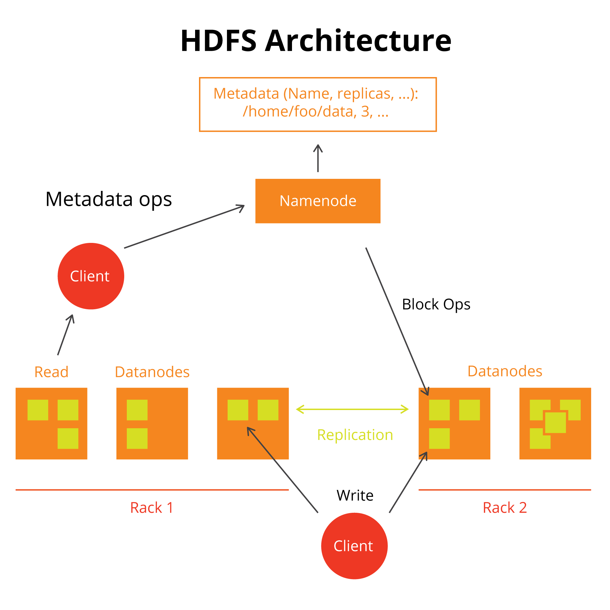
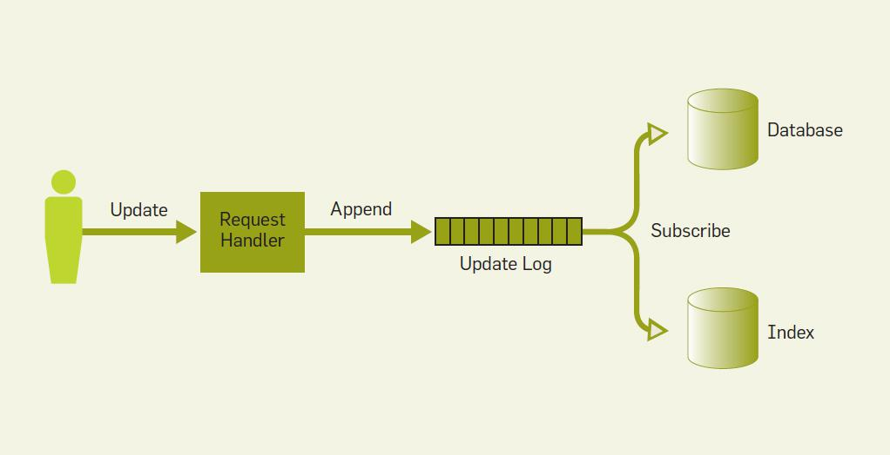

public: True class: center, middle # 分布式系统 蒋炎岩 <jyy@nju.edu.cn> 南京大学计算机软件研究所 --- # 本讲概述 > TCP/IP：全球范围的可靠网络连接 > > * 进程到进程之间的管道 > * WWW：Client-Server访问方式 > > 如何管理互联网上的很多计算机？ ---- * 分布式系统：设计与实现 --- class: center, middle # 分布式系统 --- # 分布式系统 对多台物理上独立的计算机进行虚拟化 > A distributed system runs on a collection of computers that do not have shared memory, yet looks like a single computer to its users. 操作系统 * 管理计算机硬件，为应用程序提供服务 分布式(操作)系统 * 管理.red[多个]物理上分布的计算机硬件，为应用程序提供服务 --- # 为什么需要分布式系统？ 有了互联网，很容易开个公司服务.blue[全球]客户 * 但.red[不能把鸡蛋放在一个篮子里啊！]，磁盘损坏就破产 * 总不能地震以后，支付宝里的钱就消失了吧？ .center[] --- # 为什么需要分布式系统？ .float-right[] 存储容量、运算力都成倍增长 * 一台机器存储1TB数据 * 1,000台机器就可以存储1PB数据 ---- 数据的多地多副本 * 允许计算机故障，依然不会丢失数据 ---- 就近服务 * 从地理位置近的计算机给客户端提供快速的服务 --- # 分布式应用 超大型的互联网服务 * 微信、QQ、淘宝/天猫、支付宝 * 2018双11每秒订单创建峰值49.1万笔 * 数据瞬间膨胀到PB级 * 全世界都在买，都在看直播，海量的互联网流量 (CDN) 数据分析与检索 * 全互联网的镜像和搜索 * 中国还没有靠得住的搜索引擎 * 大规模机器学习 * 你们觉得ImageNet (~1TB)很大？Google Research嫌它太小，都是拿它做在线验证 ← 分布式系统的威力！ --- # 分布式系统 和课堂上学过的操作系统是多么类似！ * 对底层(多个运行操作系统的计算机)进行抽象 * 为上层应用提供服务 .center[] --- class: center, middle # 分布式系统：设计 --- # 在OS上构建分布式系统 回顾操作系统API： * 进程、虚存、文件、.red[网络] ← 分布式系统的复杂之处 * 直接在OS API上实现分布式应用 = 应用程序直接访问硬件 ---- 分布式系统：必要的抽象层，管理分布式应用程序的基本需求 * 进程(应用) = 代码 + 数据 (堆栈) * 数据的分布式.red[存储] → 读写订单/消息/... * 数据上的分布式.red[计算] → 大规模的数据上的计算 --- # 分布式系统：设计难点 看起来不太难？ * 不要忘记，.green[分布式系统里的计算机随时可能失效] * 分布式系统必须在容忍失效的前提下，持续提供高效的服务 ---- 把分布式系统里的机器看成是.red[进程] * 进程没有共享内存，通信必须通过套接字/网络 * 进程随时都可能意外终止 --- # CAP Theorem 我们希望理想的分布式(存储)系统 * Consistency * 看起来就像一个没有cache的共享内存 * Availability * 能始终提供服务 * Partition fault tolerance * 允许机器/网络发生故障 (几乎不能避免) --- # CAP Theorem (cont'd) .center[] --- # CAP：要Availability的后果 疼讯：服务大众，不用转圈 * (你) 删除好友妈 → 发个H图开心一下 * (妈) 小赤佬你发的什么玩意？？？回来挨打！ .center[<img src="../static/wiki/os/2019/img/question.jpg" width="200px"/>] --- # CAP：要Consistency的后果 阿里：错了我可承担不起真金白银的损失 .center[] --- # Google：一战封神 在2000s前后，大家还在享受摩尔定律带来的福利；大公司都在使用高性能的服务器(IBM, EMC, ...) * 没人敢用不可靠的(PC/服务器)搭建自己的业务 * 如果平均10,000小时故障一次，10,000台机器就意味着每个小时都在出问题 ------ 直到Google的三篇论文：.red[如何在不可靠的计算机上实现分布式系统] * The Google file system (SOSP'03); * MapReduce: Simplified data processing on large clusters (OSDI'04); * BigTable: A distributed storage system for structured data (OSDI'06) --- # Hadoop Ecosystem [多个层级的抽象](https://hadoopecosystemtable.github.io)，提供多种应用服务 * 大数据/人工智能计算密集型任务；业务数据处理和持久化…… .center[] --- class: center, middle # 分布式系统栈 --- # 底层：进程 & 消息 分布式系统管理多个(分布)的进程(运行同一份代码) * 进程可以访问本机资源 * 进程间可以互相发送消息(例如通过ssh) > E Michael, et al. Teaching rigorous distributed systems with efficient model checking. In *Proc. of EuroSys*, 2019. ```cpp class Node { public: virtual void init() = 0; virtual void receive(Message &msg, Address &sender) = 0; virtual void on_timer(Timer &timer) = 0; protected: virtual void send(Message &msg, Address &to); virtual void set(Timer &timer, int duration); }; ``` --- # 系统层：机器管理 管理一台机器没什么；管理1,000,000台机器就不一样了 * 重装机器麻烦不麻烦？ * 安装更新麻烦不麻烦？ ---- 开箱即用，要多少有多少 (跟阿里云/AWS要10,000台机器，并且立即部署好) * 系统部署：Docker (所以ICS用docker很坑) * 系统管理：Mesos, Kubernetes (“Planet Scale”) --- # 存储：文件系统 分布式系统全局可见的namespace * 分布存储的目录和文件 * 依然通过`open`, `read`, `write`, `sync`, ...访问 * 但数据会透明地写入多个计算机(由NameNode配置) --- # 文件系统：HDFS .center[] --- # 存储：数据库 类比M6：在文件系统API上实现key-value store 在分布式文件系统上同样可以实现分布式的key-value store * NoSQL (HBase, Cassandra, MongoDB, Redis, ...) * SQL (Hive, …) --- # 最后的难题：计算 如何为大量分布的计算机编程？ * 多线程编程，开心不开心？ * 多进程编程/消息传递，麻烦不麻烦？ ---- 数据处理：functional programming and immutability 事务处理：event-based programming --- # 例子：互联网索引 遍布世界各地的分布式爬虫不断向分布式存储中写入爬得的网页 * 当我搜索“南京大学”时，搜索引擎如何返回包含“南京大学”的页面？ ---- ```python for url in storage.get(urls, by_date='2019-06-06'): document = storage.get(url) for word in document.words(): storage.append(INDEX[word], url) # 简单索引 # 实际算法复杂得多 ``` 如何在机器随时可能失效的前提下，正确完成索引？ --- # 例子：支付订单处理 剁手节所有订单需要进入两个系统处理：[event processing](https://cacm.acm.org/magazines/2019/5/236423-online-event-processing/fulltext) * 支付系统完成身份验证和扣款 * 订单系统在支付完成后通知卖家 * 扣款后，订单系统没有更新 → 骚扰客服 * 卖家丢失提醒 → 骚扰卖家 .center[]